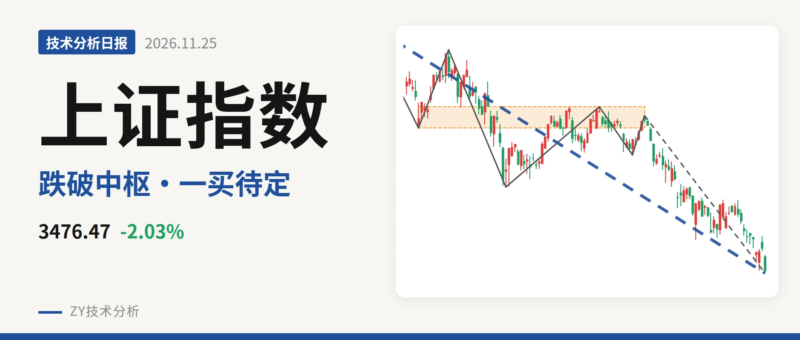
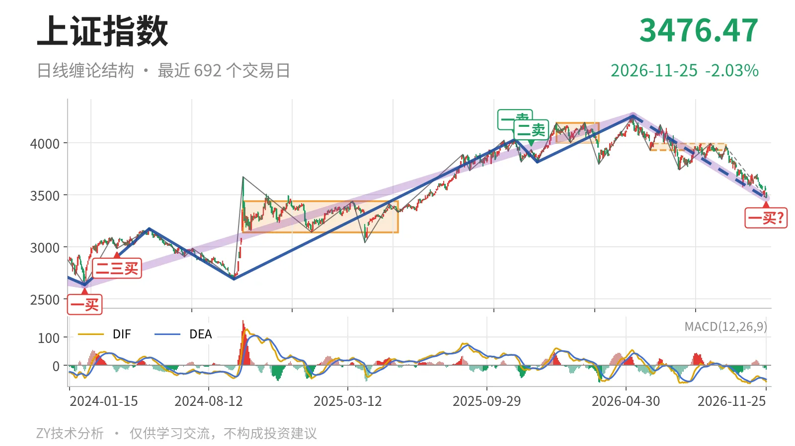
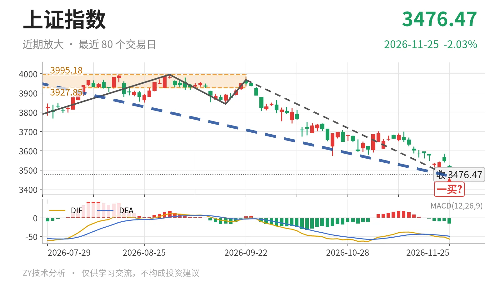

上证指数｜跌破3928中枢，3469暂成一买

最近日线中枢 3927.85—3995.18点，收盘位于中枢之下
一句话：日线下跌段延续，11月25日暂定一买3468.65点未现背驰。
📉 走势结构：日线下跌段仍未结束
上证指数仍处于5月14日以来的日线下跌线段中，尚未走完。更大级别上，2024年2月5日2635.09点至2026年5月14日4258.86点的上涨段未被破坏；但5月14日至11月25日的日线下跌线段还在延续，价格已从4258.86点跌至3468.65点，跌幅18.6%。当前不是中枢震荡，而是向下离开日线中枢的下跌段。

🧭 中枢与位置：跌破最近中枢下沿
最新收盘3476.47点已跌破6月8日至9月22日日线笔中枢下沿3927.85点，低于下沿约11.5%。该中枢区间为3927.85—3995.18点，中轴3961.51点，尚未完成。相较于1月14日至3月23日的日线笔中枢4002.78—4190.87点，中枢明显下移。当前位置距最近中枢下沿较远，且已回到2024年10月8日至2025年5月27日日线笔中枢上沿3439.05点附近上方，结构重心比上半年明显降低。
🎯 买卖点：3468.65点只是暂定一买
日线笔级别上，11月25日3468.65点是9月22日以来日线下跌笔的暂定一买。2025年11月14日4034.08点一卖与2025年12月8日3936.31点二卖，因5月14日创4258.86点新高，其结构意义已只对应日线笔级别的转折，不能代表5月以来的下跌起点。当前这笔下跌仍在延续，低点仍可能下移，因此3468.65点这个一买还未固定。

📊 背驰：下跌力度未见衰竭
当前9月22日至11月25日的日线下跌笔没有背驰。与6月23日至7月20日的日线下跌笔相比，价格新低至3469点，低于前低3741.11点；绿柱面积487大于289；DIF低点-64.0低于-61.8。这是新低且更弱，不是“新低不新弱”，说明下跌动能仍在释放。最新DIF仍在零轴下方，日线黄白线未修复。
🔎 关键位置观察：结构偏弱
上方看3928点附近，即6月8日至9月22日日线笔中枢下沿3927.85点。若之后出现反抽回不到3928点上方，结构上可构成对最近日线中枢的三卖，日线下跌段就还不会结束。下方看3439点附近与3419点附近，分别是2024年10月8日至2025年5月27日日线笔中枢上沿3439.05点和2021年7月28日至2023年5月9日线段中枢上沿3418.95点。收盘若跌破3419点，走势将回到更大级别线段中枢内部，调整级别扩大。当前价格在3468.65点暂成一买但没有背驰支撑，日线结构偏弱，弱在下破中枢下沿且下跌笔未背驰。
⚠️ 本文为基于公开行情数据的缠论技术结构记录，由程序自动计算并生成，仅供学习交流，不构成任何投资建议。市场有风险，投资需谨慎。